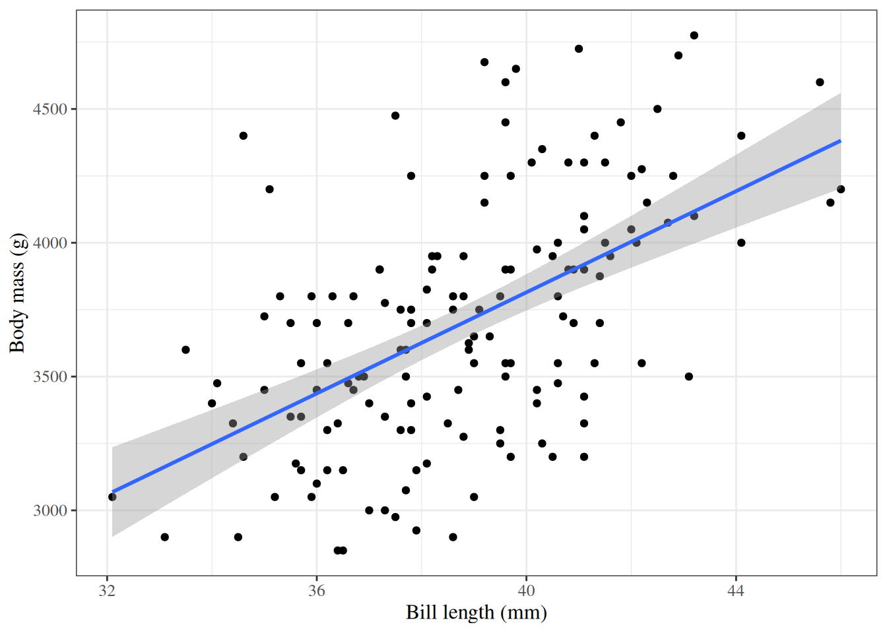
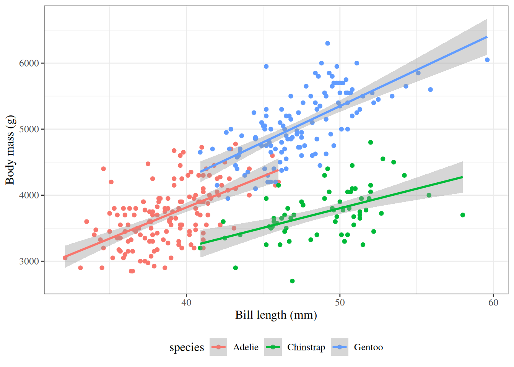
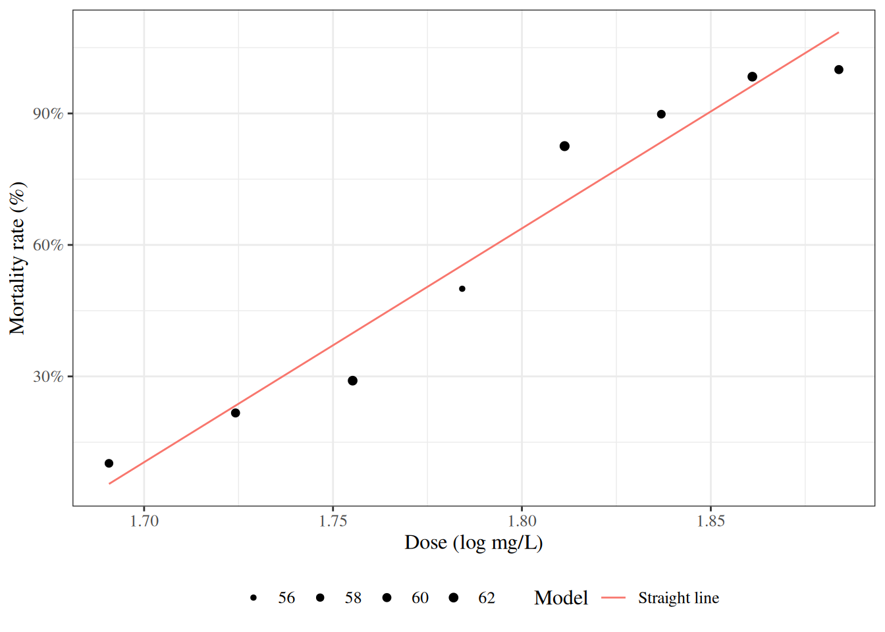
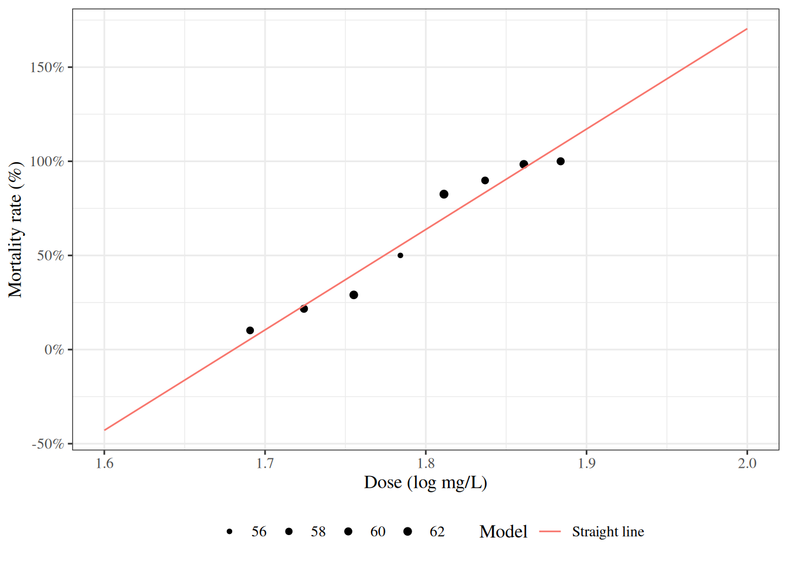
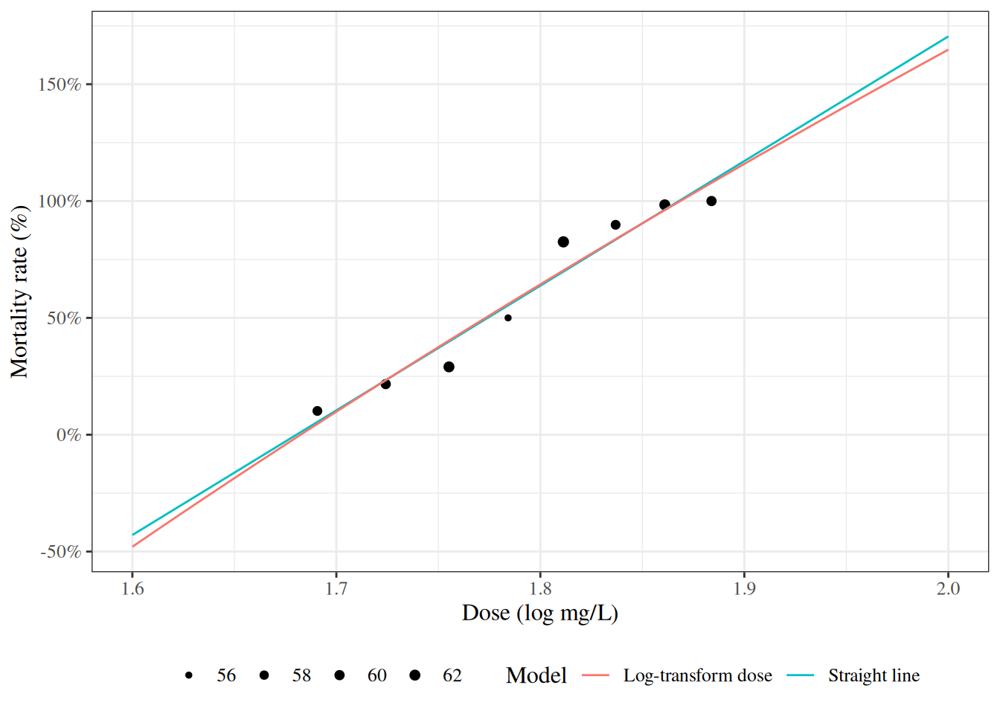
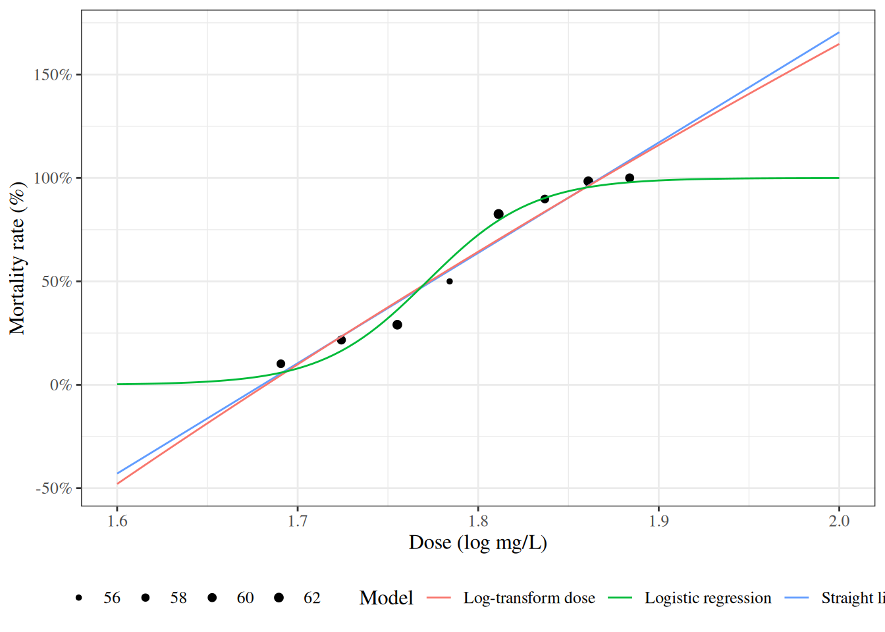

library(conflicted) # check for conflicting function definitions
# library(printr) # inserts help-file output into markdown output
library(rmarkdown) # Convert R Markdown documents into a variety of formats.
library(pander) # format tables for markdown
library(ggplot2) # graphics
library(ggfortify) # help with graphics
library(dplyr) # manipulate data
library(tibble) # `tibble`s extend `data.frame`s
library(magrittr) # `%>%` and other additional piping tools
library(haven) # import Stata files
library(knitr) # format R output for markdown
library(tidyr) # Tools to help to create tidy data
library(plotly) # interactive graphics
library(dobson) # datasets from Dobson and Barnett 2018
library(parameters) # format model output tables for markdown
library(haven) # import Stata files
library(latex2exp) # use LaTeX in R code (for figures and tables)
library(fs) # filesystem path manipulations
library(survival) # survival analysis
library(survminer) # survival analysis graphics
library(KMsurv) # datasets from Klein and Moeschberger
library(parameters) # format model output tables for
library(webshot2) # convert interactive content to static for pdf
library(forcats) # functions for categorical variables ("factors")
library(stringr) # functions for dealing with strings
library(lubridate) # functions for dealing with dates and timesIntroduction to GLMs
Introduction
Configuring R
Functions from these packages will be used throughout this document:
Here are some R settings I use in this document:
rm(list = ls()) # delete any data that's already loaded into R
conflicts_prefer(dplyr::filter)
ggplot2::theme_set(
ggplot2::theme_bw() +
# ggplot2::labs(col = "") +
ggplot2::theme(
legend.position = "bottom",
text = ggplot2::element_text(size = 12, family = "serif")))
knitr::opts_chunk$set(message = FALSE)
options('digits' = 6)
panderOptions("big.mark", ",")
pander::panderOptions("table.emphasize.rownames", FALSE)
pander::panderOptions("table.split.table", Inf)
conflicts_prefer(dplyr::filter) # use the `filter()` function from dplyr() by default
legend_text_size = 9
run_graphs = TRUEWelcome
Welcome to Epidemiology 204: Quantitative Epidemiology III (Statistical Models).
Epi 204 is a course on regression modeling.
What you should already know
Warning
Epi 202, Epi 203, and Sta 108 are prerequisites for this course. If you haven’t passed one of these courses, talk to me ASAP.
Epi 202: probability models
- Probability distributions
- binomial
- Poisson
- Gaussian
- exponential
- Characteristics of probability distributions
- Mean, median, mode, quantiles
- Variance, standard deviation, overdispersion
- Characteristics of samples
- independence, dependence, covariance, correlation
- ranks, order statistics
- identical vs nonidentical distribution (homogeneity vs heterogeneity)
- Laws of Large Numbers
- Central Limit Theorem for the mean of an iid sample
Epi 203: inference for one or several homogenous populations
- the maximum likelihood inference framework:
- likelihood functions
- log-likelihood functions
- score functions
- estimating equations
- information matrices
- point estimates
- standard errors
- confidence intervals
- hypothesis tests
- p-values
- Hypothesis tests for one, two, and >2 groups:
- t-tests/ANOVA for Gaussian models
- chi-square tests for binomial and Poisson models
- nonparametric tests:
- Wilcoxon signed-rank test for matched pairs
- Mann–Whitney/Kruskal-Wallis rank sum test for \(\geq 2\) independent samples
- Fisher’s exact test for contingency tables
- Cochran–Mantel–Haenszel-Cox log-rank test
For all of the quantities above, and especially for confidence intervals and p-values, you should know how both:
- how to compute them
- how to interpret them
Stat 108: linear regression models
- building models for Gaussian outcomes
- multiple predictors
- interactions
- regression diagnostics
- fundamentals of R programming; e.g.:
- RMarkdown or Quarto for formatting homework
- LaTeX for writing math in RMarkdown/Quarto
What we will cover in this course
Linear (Gaussian) regression models (review and more details)
Regression models for non-Gaussian outcomes
- binary
- count
- time to event
Statistical analysis using R
We will start where Epi 203 left off: with linear regression models.
Motivations for regression models
Exercise 1 Why do we need regression models?
Solution 1.
when there’s not enough data to analyze every subgroup of interest individually
especially when subgroups are defined using continuous predictors
Example: Adelie penguins

Figure 1: Palmer penguins
Linear regression

Figure 2: Palmer penguins with linear regression fit
Curved regression lines

Figure 3: Palmer penguins - curved regression lines
Multiple regression

Figure 4: Palmer penguins - multiple groups
Modeling non-Gaussian outcomes

Figure 5: Mortality rates of adult flour beetles after five hours’ exposure to gaseous carbon disulphide (Bliss 1935)
Why don’t we use linear regression?

Figure 6: Mortality rates of adult flour beetles after five hours’ exposure to gaseous carbon disulphide (Bliss 1935)
Zoom out

Figure 7: Mortality rates of adult flour beetles after five hours’ exposure to gaseous carbon disulphide (Bliss 1935)
log transformation of dose?

Figure 8: Mortality rates of adult flour beetles after five hours’ exposure to gaseous carbon disulphide (Bliss 1935)
Logistic regression

Figure 9: Mortality rates of adult flour beetles after five hours’ exposure to gaseous carbon disulphide (Bliss 1935)
Structure of regression models
Exercise 2 What is a regression model?
Definition 1 (Regression model) Regression models are conditional probability distribution models:
\[\text{P}(Y|\tilde{X})\]
Exercise 3 What are some of the names used for the variables in a regression model \(\text{P}(Y|\tilde{X})\)?
Definition 2 (Outcome) The outcome variable in a regression model is the variable whose distribution is being described; in other words, the variable on the left-hand side of the “|” (“pipe”) symbol.
The outcome variable is also called the response variable, regressand, predicted variable, explained variable, experimental variable, output variable, dependent variable, endogenous variables, target, or label.
and is typically denoted \(Y\).
Definition 3 (Predictors) The predictor variables in a regression model are the conditioning variables defining subpopulations among which the outcome distribution might vary.
Predictors are also called regressors, covariates, independent variables, explanatory variables, risk factors, exposure variables, input variables, exogenous variables, candidate variables (Dunn and Smyth (2018)), carriers (Dunn and Smyth (2018)), manipulated variables, or features and are typically denoted \(\tilde{X}\). 1
| \(\tilde{X}\) | \(Y\) | usual context |
|---|---|---|
| input | output | |
| independent | dependent | |
| predictor | predicted or response | |
| explanatory | explained | |
| exogenous | endogenous | econometrics |
| manipulated | measured | randomized controlled experiments |
| exposure | outcome | epidemiology |
| feature | label or target | machine learning |
Exercise 4 What is the general structure of a generalized linear model?
Solution 2. Generalized linear models have three components:
The outcome distribution family: \(\text{p}(Y|\mu(\tilde{x}))\)
The link function: \(g(\mu(\tilde{x})) = \eta(\tilde{x})\)
The linear component: \(\eta(\tilde{x}) = \tilde{x}\cdot \beta\)
- The outcome distribution family (a.k.a. the random component of the model)
- Gaussian (normal)
- Binomial
- Poisson
- Exponential
- Gamma
- Negative binomial
- The linear component (a.k.a. the linear predictor or linear functional form) describing how the covariates combine to define subpopulations:
\[\eta(\tilde{x}) \stackrel{\text{def}}{=}\tilde{x}^{\top} \tilde{\beta}= \beta_0 + \beta_1 x_1 + \beta_2 x_2 + ...\]
- The link function relating the outcome distribution to the linear component, typically through the mean:
- identity: \(\mu(y) = \eta(\tilde{x})\)
- logit: \(\text{log}{\left\{\frac{\mu(y)}{1-\mu(y)}\right\}} = \eta(\tilde{x})\)
- log: \(\text{log}{\left\{\mu(y)\right\}} = \eta(\tilde{x})\)
- inverse: \({\left(\mu(y)\right)}^{-1} = \eta(\tilde{x})\)
- clog-log: \(\text{log}{\left\{-\text{log}{\left\{1-\mu(y)\right\}}\right\}} = \eta(\tilde{x})\)
Components 2 and 3 together are sometimes called the systematic component of the model (for example, in Dunn and Smyth (2018)).
Dalgaard, Peter. 2008. Introductory Statistics with r. New York, NY: Springer New York. https://link.springer.com/book/10.1007/978-0-387-79054-1.
Dunn, Peter K, and Gordon K Smyth. 2018. Generalized Linear Models with Examples in R. Vol. 53. Springer. https://link.springer.com/book/10.1007/978-1-4419-0118-7.
Wickham, Hadley, Mine Çetinkaya-Rundel, and Garrett Grolemund. 2023. R for Data Science. " O’Reilly Media, Inc.". https://r4ds.hadley.nz/.